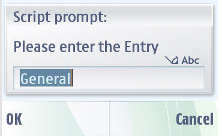
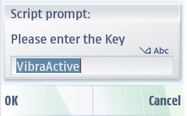
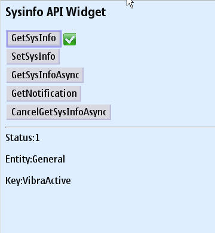
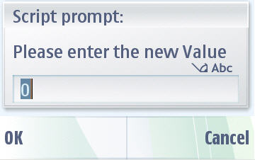

System Information Service API - Example Widget Documentation
This document describes the System informationWidget application for Nokia Symbian^3 SDK. Target audience are developers using other run-time environments interested in SysInfo services.
Widgets are lightweight Web applications developed using the same well-known standards-based Web technologies – AJAX, CSS, HTML and JavaScript – used to create Web pages. Developers can use it as a reference and testers can use it to test the relevant functionality. This widget is intended for Nokia Symbian^3 SDK. Developers should be able to develop professional applications.
Example Widget Application is designed to run on Nokia Symbian^3 SDK. It is designed such that a developer takes it as a reference to create useful applications for any functionality supported on SDK. It will be designed to let the testers to test the functionality.
Example widget is not intended to give full featured implementation. This example will implement the System info Service APIs. Only few SA’s are modifiable and will support notifications.
The example widget uses the WRT 1.0 API. The Web Runtime (WRT) environment supports the following Internet technology standards:
HTML 4.01
The basic HTML standards are supported.
XHTML 1.0
The basic XHTML standards are supported.
CSS Level 2 revision 1 (CSS 2.1)
JavaScript 1.5 (ECMA-262 3rd Edition)
The standard JavaScript features are supported. The WRT environment also provides some additional features that are mobile device specific.
The following additional JavaScript features are supported in the WRT environment:
The SysInfoWidget demonstrates service APIs for system information. APIs provide read and write access to system information and allow registrating to system events identified by System Attributes. The system information of a SysInfo SAPI is classified into eight entities below:
Use Cases
1. Use the file - Open option to open the widget under <Installed_SDK_Dir>\examples\widget\SysInfoWidget.wgz.
2. Go to Application folder and click on the SysInfoWidget to start. Once you start the widget, it will ask your application permission to access data and then start the application.

3. GetSysInfo allows you to get selected system information. Once you click on it, it will ask you to provide System entry and system key name for which you want to get information.
 
For example: Other Entity and key value could be "Battery" and "BatteryStrength", "Connectivity" and "Bluetooth".
4. Once you select that, it will display the system information of the selected entity. You can also select any of the entity listed above in this document.

5. SetSysInfo allows you to set selected information for given entity and its key. As described in step-3, provide entity and its key and it will ask you to enter value of that system property. Provide proper value and set the property.

6. If you set notification for any given property, it will let you know (give you notification) for that property value change. GetSysInfoAsync and CancelGetSysInfoAsync are for ASYNC call go to get system information propeties.
Example Widget Application does not support internationalization